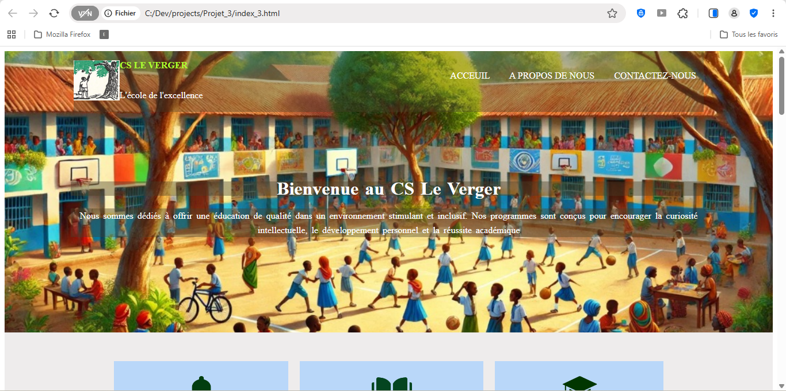
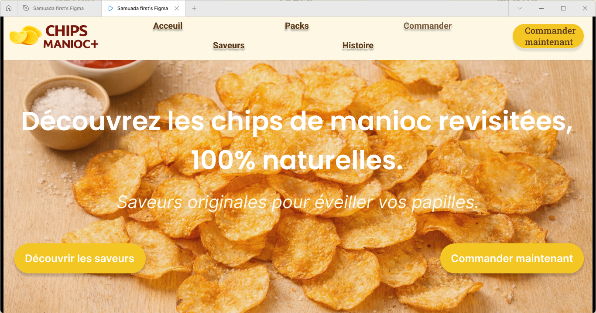
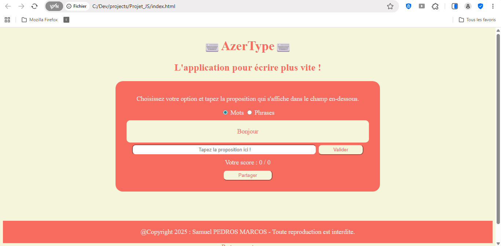
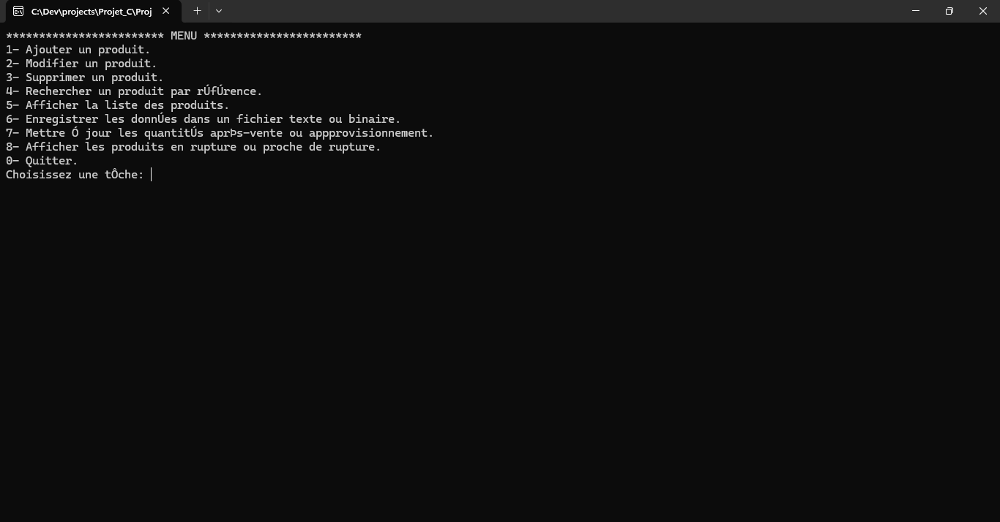
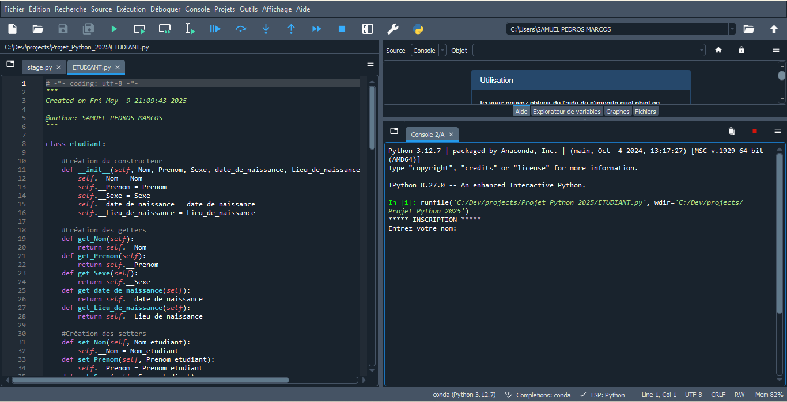

Qui suis-je ?

Je m'appelle Samuel PEDROS MARCOS, j'ai 23 ans, je vis à Cotonou. Je suis étudiant en Systèmes Informatiques et Logiciels dans une des grandes universités du Bénin dénommée UATM - GASA Formation. Curieux, autodidacte et rigoureux, je construis activement un profil technique complet à travers un double cursus universitaire (informatique + anglais technique) complété par une certification professionnelle Cisco CCNA. Cette combinaison unique me prépare à contribuer efficacement dans des environnements techniques exigeants, aussi bien au niveau local qu'international.
Je développe des sites web avec HTML/CSS, crée des applications en Python et C, conçois des bases de données SQL, et configure des équipements réseau Cisco; actuellement en formation pour approfondir ces compétences techniques. N'hésitez pas à parcourir mon site pour en apprendre davantage !
Mon parcours technique
Licence en Systèmes Informatiques et Logiciels |
|
Licence en maîtrise de la langue Anglaise |
|
Baccalauréat Série C |
|
Mes réalisations techniques
Mon parcours en développement est une succession d'apprentissages concrets, où chaque projet marque une étape significative dans l'acquisition de nouvelles compétences. Des fondations algorithmiques en Python et C aux interfaces utilisateur modernes en JavaScript, en passant par l'architecture rigoureuse des bases de données avec SQL et Merise, cette collection présente l'évolution organique de mes capacités techniques. Chaque réalisation, loin d'être un exercice isolé, contribue à construire une vision globale des systèmes informatiques, m'approchant progressivement du profil de développeur full-stack que j'ambitionne de devenir.
DÉVELOPPEMENT DE SITES WEB
Mon parcours en développement va au-delà de la simple programmation : c'est une approche systémique qui comprend la conception, l'implémentation et l'infrastructure. Chaque projet représente une pièce du puzzle technique que je maîtrise progressivement.
Points clés pour chaque site:- Analyse des besoins :
- Identification des objectifs du site
- Définition du public cible
- Analyse de la concurrence
- Conception :
- Création de maquettes simples
- Choix d'une palette de couleurs cohérente
- Définition de la structure de navigation
- Développement :
- Structure HTML5 sémantique :
- Utilisation des balises appropriées (header, nav, main, section, footer)
- Hiérarchie logique des titres (h1 à h6)
- Attributs alt pour les images
- Style CSS3 moderne :
- Mise en page avec Flexbox et/ou Grid
- Design responsive avec media queries
- Animations CSS subtiles (transitions, hover effects)
- Typographie soignée (Google Fonts)
- Optimisation :
- Images compressées pour le web
- Code propre et commenté
- Validation W3C
- Tests sur différents navigateurs
- Structure HTML5 sémantique :
- Contenu :
- Rédaction de textes adaptés
- Sélection/création d'images pertinentes
- Intégration de formulaires de contact
- Types de sites réalisés :
- Site vitrine pour un petit commerce local
- Portfolio personnel
- Landing page pour un service
- Site informatif avec plusieurs pages
Technologies utilisées : HTML5 | CSS3 | Flexbox | Grid | Media Queries | Design Responsive | UX Design | UI Design
Ces projets montrent ma capacité à créer des interfaces web modernes, accessibles et optimisées pour tous les appareils, avec une attention particulière à l'expérience utilisateur.
Aperçu
MAQUETTE HI-FI & PROTOTYPE : Site E-commerce CHIPS MANIOC+
Donner une identité visuelle à une marque artisanale : CHIPS MANIOC+ va au-delà du simple design pour créer une expérience de marque cohérente.
Points clés :- Conception UI complète en 7 sections avec navigation fluide et hiérarchie visuelle claire
- UX optimisée avec parcours utilisateur logique et storytelling intégré
- Charte Graphique Appliquée
- Prototypage Interactif
- Système de 20 images organisées (5 saveurs × 4 packs)
- Menu déroulant à deux niveaux
- Navigation sticky avec scroll fluide
- États interactifs du formulaire
Technologies utilisées : Figma | UX Design | UI Design | Prototypage | Design Thinking | Charte Graphique
Ce projet UX/UI montre ma capacité à concevoir des interfaces complètes, respecter des contraintes graphiques, et anticiper l'expérience utilisateur avant le développement. Il complète mes compétences techniques en montrant que je comprends le cycle complet de création web, du design au code.
Aperçu
APPLICATION WEB "AZERTYPE"
Améliorer sa vitesse de frappe tout en s'amusant, c'est le défi qu'AzerType relève avec élégance. Cette application web interactive, développée en JavaScript pur, transforme l'apprentissage du clavier en expérience ludique avec deux modes de jeu et un système de scoring dynamique.
Points clés développés:- Développement JavaScript Vanilla sans frameworks
- Deux modes de jeu : mots individuels et phrases complètes avec génération aléatoire
- Système de scoring en temps réel avec calcul de précision
- Interface responsive avec animations CSS et feedback visuel immédiat
- Fonctionnalités avancées :
- Formulaire modal de partage
- Gestion d'événements complexes
- Manipulation dynamique du DOM
Technologies utilisées : JavaScript ES6+ | HTML5 | CSS3 | DOM Manipulation | Responsive Design | UX/UI
Ce projet montre ma maîtrise des fondamentaux du développement web front-end avec JavaScript pur, ma capacité à créer des applications interactives complètes sans dépendre de frameworks avec une expérience utilisateur optimisée, et mon attention la qualité du code
Aperçu
 → Voir les détailsAPPLICATION DE GESTION DE STOCK
Pour répondre aux besoins de suivi d'inventaire en temps réel, j'ai développé une application console complète en langage C. Un outil robuste pour une gestion fiable.
Points clés :- Architecture modulaire et maintenable
- Gestion manuelle de la mémoire
- Interface console ergonomique avec menus interactifs
- Développement des fonctionnalités principales :
- Ajout/suppression/modification de produits
- Suivi des entrées/sorties en temps réel
- Système d'alertes pour les stocks critiques
- Journalisation complète des opérations
- Recherche et filtrage avancés
Technologies utilisées : Langage C | Structures de données | Fichiers textes
Ce projet montre ma maîtrise de la programmation bas niveau, de l'optimisation mémoire, et de la création d'applications console complètes et maintenables.
Aperçu
AUTOMATISATION DE GESTION SCOLAIRE
Face à la gestion manuelle chronophage des notes scolaires, j'ai développé un script Python pour automatiser la gestion des notes scolaires. Une solution concrète à un problème administratif courant.
Points clés :- Développement d'un pipeline de traitement de données :
- Lecture/écriture de fichiers .txt
- Calcul automatique des moyennes par matière et générale
- Attribution des mentions (Passable, Assez Bien, etc.)
- Génération de bulletins formatés
- Pipeline de traitement de données
- Création d'un module de statistiques :
- Taux de réussite par matière
- Identification des élèves en difficulté
- Interface en ligne de commande avec options configurables
- Gestion des erreurs et logs d'exécution
Technologies utilisées : Python | Traitement de données | Automatisation | Fichiers textes
Ce projet montre ma capacité à créer des outils d'automatisation efficaces qui simplifient des processus répétitifs et illustre comment quelques lignes de code bien pensées peuvent optimiser des workflows complexes.
Aperçu
SYSTÈME DE GESTION HÔTELIÈRE
Projet académique de conception d'une base de données complète pour un hôtel fictif dont le défi est de créer une structure de données robuste capable de gérer les réservations, les chambres, les clients et la facturation, avec des relations complexes et des contraintes d'intégrité.
Points clés :- Analyse des besoins et modélisation avec la méthodologie Merise
- Conception du MCD/MLD (Modèle Conceptuel/Logique de Données)
- Implémentation en SQL avec MySQL
- Gérer les arrivées/départs
- Calculer les factures automatiquement
- Générer des rapports d'occupation
- Rechercher les disponibilités
Technologies utilisées : Merise | MySQL | SQL | Normalisation | Requêtes complexes
Ce projet montre ma capacité à concevoir une architecture de données robuste, depuis l'analyse jusqu'à l'implémentation, avec une approche méthodologique rigoureuse.
MES COMPÉTENCES TECHNIQUES
DÉVELOPPEMENT WEB & FRONT-END |
|
PROGRAMMATION & DÉVELOPPEMENT LOGICIEL |
|
BASES DE DONNÉES & ARCHITECTURE DONNÉES |
|
RÉSEAUX & INFRASTRUCTURE |
|
COMPÉTENCES TRANSVERSALES |
|
EXPÉRIENCE PROFESSIONNELLE
Stage pratique de 4 mois (mai à août 2025) chez GNM-SERVICES, une entreprise de services informatiques basée à Cotonou, Bénin. Cette expérience m'a permis d'appliquer mes connaissances académiques en systèmes informatiques et réseaux dans un environnement professionnel réel, travaillant sur divers projets d'infrastructure pour des clients variés (entreprises, administrations, commerces, particuliers).
Missions principales
Support Technique & Maintenance :
- Maintenance préventive et curative sur parc informatique
- Nettoyage et optimisation matérielle (UC, imprimantes, périphériques)
- Support utilisateur et résolution de problèmes quotidiens
Infrastructure Réseau :
- Assistance aux installations de câblage réseau (RJ45, normes T568A/B)
- Tests de connectivité et dépannage réseau (ping, tests de continuité)
- Participation aux installations de systèmes de vidéosurveillance
Organisation & Documentation :
- Préparation et organisation du matériel pour les interventions
- Documentation des procédures et configurations
- Suivi du matériel et gestion des stocks techniques
- Assistance logistique pour les déplacements sur site
Ce stage m'a permis de comprendre comment les compétences techniques s'appliquent dans un contexte professionnel réel. J'ai appris à adapter mes connaissances aux besoins concrets des utilisateurs et à travailler méthodiquement sur des problèmes techniques variés.